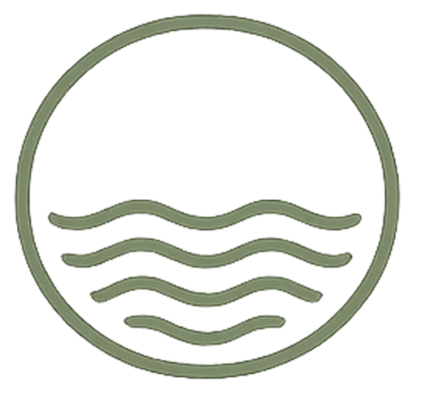
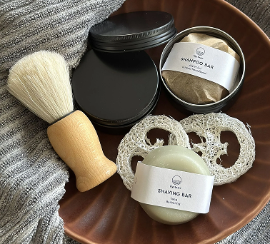
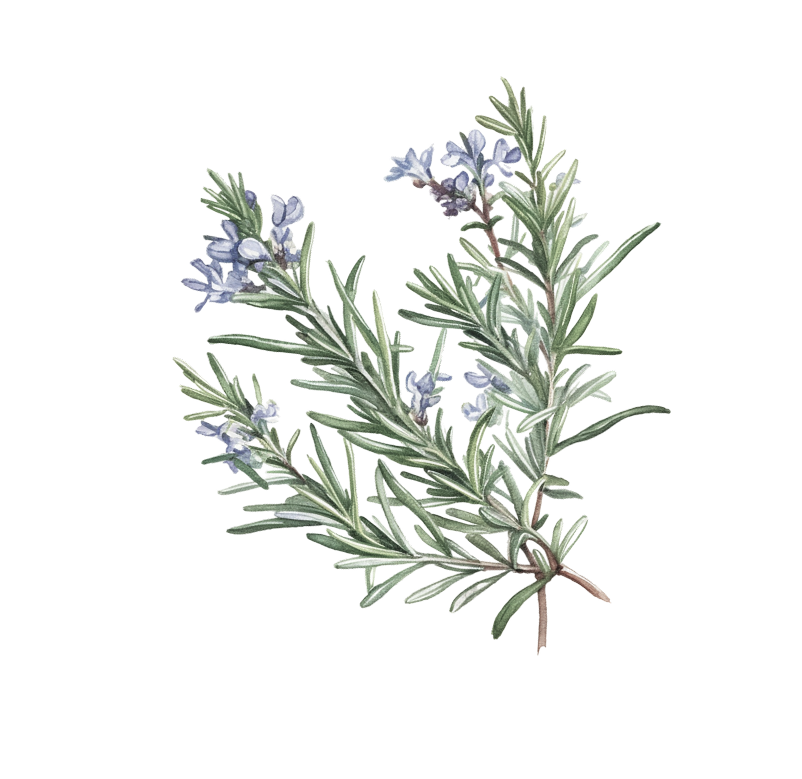
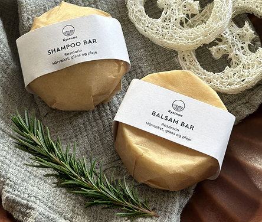
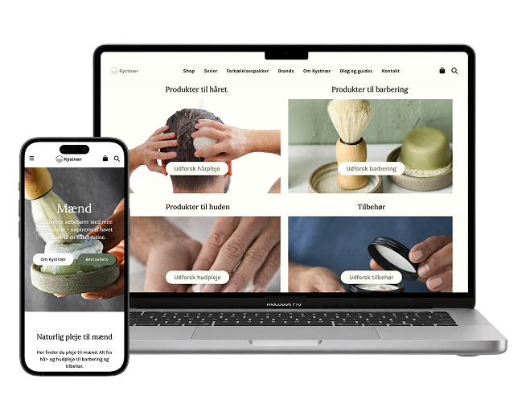

Kystnær
A research-led product repositioning
How might an existing product range become relevant to a new audience?
Kystnær wanted to reach men 35+ without creating an entirely new product.

My Contribution
- UX, Market, and Scientific Research
- Interviews & User Testing
- Content & Information Architecture
- Code & Web Development
Following the Evidence
Kystnær had a unique challenge. The product range was supposed to aim at a unisex audience, but the Kystnær brand identity had a very feminine expression.
Through interviews with the new target group, combined with research into men’s magazines, grooming habits and health-related content, one topic kept reappearing: hair loss.
The Discovery
The research revealed something interesting: Kystnær already had a product that could speak directly to this concern — their Rosemary Shampoo and Conditioner Bars.

The Solution
The final solution centred around the repositioning of the Rosemary bars, using science-backed information to explain how they could be incorporated into a hair-care routine.
Furthermore, a dedicated men’s section provided focus on products relevant to the new audience and a place where they could be discovered as part of a consistent experience.


The Build
- Design
- Information Architecture
- Development
- Custom code for men’s section
- Evaluation
- Usability Test with target group
What I found most rewarding about the project was following the evidence until the connection between the needs of the target group and what Kystnær had to offer became clear.